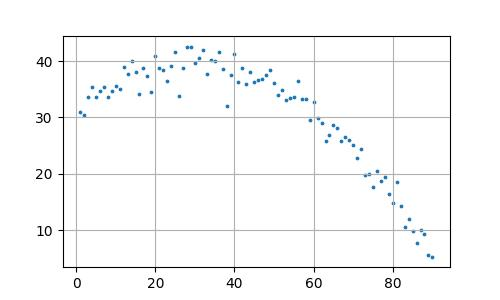

Diyelim ki alttaki veri üzerinde lineer regresyon işletmek istiyoruz, yani veriye bir çizgi uydurma problemi olarak yaklaşacağız.
import pandas as pd
df = pd.read_csv('../../compscieng/compscieng_app20cfit/cave.csv')
plt.figure(figsize=(5, 3))
plt.scatter(df.Temp, df.C,s=3)
plt.grid(True)
plt.savefig('stat_102_regchpt_01.jpg')
import statsmodels.formula.api as smf
results = smf.ols('C ~ Temp', data=df).fit()
print ("R^2 = %0.2f (%0.2f, %0.2f)" % (results.rsquared, results.params[0],results.params[1],))R^2 = 0.62 (44.26, -0.30)Uyum (fit) başarısı üstteki gibi rapor edildi. Sonuç fena değil ama daha iyi olabilirdi. Şunu soralım, üstteki veriye tek bir çizgi uydurmak uygun mudur? Aslında iki (ya da daha fazla) çizgi daha uygun olmaz mıydı? Biz kabaca bakarak bile bunu görebiliyoruz. Kontrol edelim, veriyi iki parça olarak alalım, ve her parça üzerinde ayrı bir regresyon işletelim.
results = smf.ols('C ~ Temp', data=df[0:15]).fit()
print ("R^2 = %0.2f" % results.rsquared)
results = smf.ols('C ~ Temp', data=df[15:-1]).fit()
print ("R^2 = %0.2f" % results.rsquared)R^2 = 0.77
R^2 = 0.80Parçalı uyum sonucu daha iyi olarak rapor edildi. Demek ki üstteki veride tek değil (en az) iki ve birbirinden farklı doğrusal ilişki var.
Nerede olduklarını bilmediğimiz parçalı regresyonu çözmenin iyi bir yöntemi bunu olasılıksal olarak yapmak, ve Bayes yöntemine başvurmak. İlk önce normal regresyonu Bayes usulü nasıl yaparız onu görelim.
Herhangi bir değişim noktası içermeyen basit bir doğrusal regresyon için, her bir \(y_t\) gözleminin, sabit bir artık varyansı \(\sigma^2\) ile birlikte, tahmin edilen bir ortalama \(\mu_t\) etrafında normal dağıldığını varsayıyoruz:
\[y_t \sim N(\mu_t, \sigma^2)\]
Serinin hem taban yüksekliği hem de zaman içindeki gidişatı, doğrudan bu tahmin edilen ortalamanın, yani \(\mu_t\)’nin içine gömülüdür. Verinin ham biçimde tutulduğu klasik bir basit doğrusal regresyon modelinde, herhangi bir \(t\) zaman adımındaki beklenen ortalama için hem bir taban kesme noktası (\(\alpha\)) hem de bir eğim katsayısı (\(\beta\)) gereklidir:
\[\mu_t = \alpha + \beta x_t\]
\(x_t\), \(t\) zamanındaki bağımsız değişkeninizdir
(örneğin, Sıcaklık (Temp)).
\(\alpha\), kesme noktası (intercept) katsayısıdır ve \(X = 0\) olduğunda \(Y\)’nin taban değerini temsil eder.
\(\beta\), eğim katsayısıdır ve \(X\)’teki birim değişim başına \(Y\)’deki değişim oranını belirler.
\(\mu_t\), o belirli veri noktası için elde edilen ders kitabı tahminidir.
Yani, \(y_t \sim N(\mu_t, \sigma^2)\) yazdığımızda, çan eğrisinin merkezine kodlanmış her iki parametreyi de açıkça görmek için bunu tamamen açabilirsiniz:
\[y_t \sim N(\alpha + \beta x_t, \sigma^2)\]
Bu, modelin, veri noktalarınız \(y_t\)’nin, taban yüksekliği \(\alpha\) tarafından kontrol edilen ve dikliği tamamen eğim parametresi \(\beta\) tarafından belirlenen düz bir çizgi etrafında rastgele sıçradığını varsaydığı anlamına gelir.
Tek bir bağımsız gözlem \(y_t\) için Olasılık Yoğunluk Fonksiyonu (PDF) şudur:
\[P(y_t|x_t, \alpha, \beta, \sigma) = \frac{1}{\sqrt{2\pi\sigma^2}} \exp\left(-\frac{(y_t - \mu_t)^2}{2\sigma^2}\right)\]
Tüm gözlemlerin, parametreler verildiğinde bağımsız olduğunu varsayarsak, \(D\) veri kümesinin tamamının ortak olurluğu, bireysel olasılıklarının çarpımıdır:
\[P(D|\alpha, \beta, \sigma) = \prod_{t=1}^{N} \frac{1}{\sqrt{2\pi\sigma^2}} \exp\left(-\frac{(y_t - \mu_t)^2}{2\sigma^2}\right)\]
Doğal Logaritmanın Alınması
Log-olurluğu bulmak için, parametrelerimizi Gauss PDF’sinin içine yerleştirir ve doğal logaritmasını (ln) alırız. Logaritmayı almak, çarpımımızı (\(\prod\)) bir toplama dönüştürür; bu da sayısal olarak kararlıdır ve hesaplaması daha kolaydır.
Önce tek bir veri noktasının log-olurluğuna bakalım:
\[\ln P(y_t|\mu_t, \sigma) = \ln\left[\frac{1}{\sqrt{2\pi\sigma^2}} \exp\left(-\frac{(y_t - \mu_t)^2}{2\sigma^2}\right)\right]\]
Standart logaritma kurallarını kullanarak — \(\ln(A \cdot B) = \ln A + \ln B\) ve \(\ln(A^B) = B \ln A\) — bunu genişletiriz:
\[\ln P(y_t|\mu_t, \sigma) = \ln\left[(2\pi\sigma^2)^{-1/2}\right] + \ln\left[\exp\left(-\frac{(y_t - \mu_t)^2}{2\sigma^2}\right)\right]\]
\[\ln P(y_t|\mu_t, \sigma) = -\frac{1}{2}\ln(2\pi) - \ln(\sigma) - \frac{(y_t - \mu_t)^2}{2\sigma^2}\]
Daha fazla sadeleştirme bize standart, yerelleştirilmiş log-olurluk denklemini verir:
\[\ln P(y_t|\mu_t, \sigma) = -\frac{1}{2}\ln(2\pi) - \ln(\sigma) - \frac{1}{2\sigma^2}(y_t - (\alpha + \beta x_t))^2\]
Önsellerin Tanımlanması
Normal regresyonda, \(\alpha\), \(\beta\) ve \(\sigma\), sabit, bilinmeyen sabitler olarak ele alınır. Bayes regresyonunda bunları rastgele değişkenler olarak ele alır ve onlara önsel dağılımlar \(P(\alpha, \beta, \sigma)\) atarız. Önseller, veriyi gözlemlemeden önce parametre değerleri hakkındaki inançlarımızı (ya da bunların yokluğunu) ölçer.
Parametrelerimizin başlangıçta birbirinden bağımsız olduğunu varsayarsak, ortak önsel olasılık şu şekilde çarpanlarına ayrılır:
\[P(\alpha, \beta, \sigma) = P(\alpha) \cdot P(\beta) \cdot P(\sigma)\]
Bu önseller için yaygın standart seçimler şunları içerir:
Kesme Noktası (\(\alpha\)): Bilinen bir taban yönelimi yoksa genellikle sıfırda merkezlenmiş geniş bir Gauss önseli atanır: \(\alpha \sim N(0, \sigma_\alpha^2)\).
Eğim (\(\beta\)): Benzer şekilde bir Gauss önseli atanır: \(\beta \sim N(0, \sigma_\beta^2)\).
Artık Varyans (\(\sigma\)): Standart sapma kesinlikle pozitif olması gerektiğinden, tipik olarak bir Yarı-Normal, Üstel veya Ters-Gamma dağılımı kullanılarak modellenir: \(\sigma \sim \text{Yarı-Normal}(\sigma_0)\).
Sonsal (Posterior) Dağılımın Türetilmesi
Bayes Teoremi, önsel inançlarımızı verinin olurluğunu kullanarak güncellemek ve sonsal dağılımı \(P(\alpha, \beta, \sigma|D)\) elde etmek için matematiksel köprüyü sağlar.
Bayes Teoremi şu şekilde yazılır:
\[P(\alpha, \beta, \sigma|D) = \frac{P(D|\alpha, \beta, \sigma) \cdot P(\alpha, \beta, \sigma)}{P(D)}\]
Burada:
\(P(\alpha, \beta, \sigma|D)\), Sonsal’dır (veriyi gördükten sonraki güncellenmiş inançlarımız).
\(P(D|\alpha, \beta, \sigma)\), Ortak Olurluk’tur (parametreler verildiğinde verinin olasılığı).
\(P(\alpha, \beta, \sigma)\), Ortak Önsel’dir (başlangıçtaki inançlarımız).
\(P(D)\), Marjinal Olurluk’tur (ya da kanıt), pay kısmının tüm olası parametre uzayları üzerinden integrali alınarak hesaplanır:
\[P(D) = \int\int\int P(D|\alpha, \beta, \sigma) P(\alpha, \beta, \sigma)\, d\alpha\, d\beta\, d\sigma\]
Orantısal Form
Payda \(P(D)\), \(\alpha\), \(\beta\) veya \(\sigma\) parametrelerine bağlı olmadığından, yalnızca sonsalin 1’e integre olmasını sağlayan bir normalleştirme sabiti işlevi görür. Bu nedenle, analitik türetmeler sırasında bunu atlarız ve orantısal formülasyonla çalışırız:
Sonsal \(\propto\) Olurluk × Önsel
\[P(\alpha, \beta, \sigma|D) \propto P(D|\alpha, \beta, \sigma) \cdot P(\alpha) \cdot P(\beta) \cdot P(\sigma)\]
Log-Sonsal Formülasyonu
Hesaplamalı uygulama için (Markov Zinciri Monte Carlo örneklemesi gibi), sonsalın doğal logaritmasını alırız. Bu, kalan tüm çarpımları toplamlara dönüştürerek kararlılığı en üst düzeye çıkarır:
\[\ln P(\alpha, \beta, \sigma|D) \propto \ln P(D|\alpha, \beta, \sigma) + \ln P(\alpha) + \ln P(\beta) + \ln P(\sigma)\]
Bölüm 2’deki ortak log-olurluk türetmemizi yerine koyarak, genişletilmiş amaç fonksiyonu şu hale gelir:
\[\ln P(\alpha, \beta, \sigma|D) \propto \sum_{t=1}^{N}\left[-\frac{1}{2}\ln(2\pi) - \ln(\sigma) - \frac{1}{2\sigma^2}(y_t - (\alpha + \beta x_t))^2\right] + \ln P(\alpha) + \ln P(\beta) + \ln P(\sigma)\]
x_data = df['Temp'].values
y_data = df['C'].values
N = len(x_data)
def log_likelihood(alpha, beta, sigma, x, y):
if sigma <= 0:
return -np.inf
mu = alpha + beta * x
term1 = -0.5 * np.log(2 * np.pi)
term2 = -np.log(sigma)
term3 = -((y - mu) ** 2) / (2 * (sigma ** 2))
return np.sum(term1 + term2 + term3)
def log_prior(alpha, beta, sigma):
if sigma <= 0 or sigma > 50:
return -np.inf
if not (-100 < alpha < 100):
return -np.inf
if not (-10 < beta < 10):
return -np.inf
return 0.0
def log_posterior(alpha, beta, sigma, x, y):
return log_prior(alpha, beta, sigma) + log_likelihood(alpha, beta, sigma, x, y)
def metropolis_sampler(x, y, iterations=25000, proposal_width_alpha=1.0, proposal_width_beta=0.05, proposal_width_sigma=0.5):
current_alpha = 0.0
current_beta = 0.0
current_sigma = 1.0
alpha_trace = np.zeros(iterations)
beta_trace = np.zeros(iterations)
sigma_trace = np.zeros(iterations)
accepted_count = 0
for i in range(iterations):
proposed_alpha = np.random.normal(current_alpha, proposal_width_alpha)
proposed_beta = np.random.normal(current_beta, proposal_width_beta)
proposed_sigma = np.random.normal(current_sigma, proposal_width_sigma)
log_post_current = log_posterior(current_alpha, current_beta, current_sigma, x, y)
log_post_proposed = log_posterior(proposed_alpha, proposed_beta, proposed_sigma, x, y)
log_acceptance_ratio = log_post_proposed - log_post_current
if np.log(np.random.uniform(0, 1)) < log_acceptance_ratio:
current_alpha = proposed_alpha
current_beta = proposed_beta
current_sigma = proposed_sigma
accepted_count += 1
alpha_trace[i] = current_alpha
beta_trace[i] = current_beta
sigma_trace[i] = current_sigma
print(f"Acceptance Rate: {accepted_count / iterations * 100:.2f}%")
return alpha_trace, beta_trace, sigma_trace
iterations = 25000
burn_in = 5000
alpha_chain, beta_chain, sigma_chain = metropolis_sampler(x_data, y_data, iterations=iterations)
final_beta = beta_chain[burn_in:]
final_sigma = sigma_chain[burn_in:]
print(f"\n--- Posterior Estimates (Standardized Scale) ---")
print(f"Beta: {np.mean(final_beta):.4f} ± {np.std(final_beta):.4f}")
print(f"Sigma (Residual Noise): {np.mean(final_sigma):.4f} ± {np.std(final_sigma):.4f}")Acceptance Rate: 19.79%
--- Posterior Estimates (Standardized Scale) ---
Beta: -0.2970 ± 0.0247
Sigma (Residual Noise): 6.1444 ± 0.4725Türetmenin sonunda, tek bir veri noktasının log-olurluğu için kapalı biçimli bir ifadeye ulaşmıştık: Bu ifadenin tam olarak üç toplamsal parçaya sahip olduğuna dikkat edelim. Bu, yazılış şeklinin bir tesadüfü değildir — bu, bir üstel ile bir normalleştirme sabitinin çarpımının logaritmasının alınmasının doğrudan cebirsel bir sonucudur; bu da bir çarpımı toplamaya böler (hatırlayın: \(\ln(A \cdot B) = \ln A + \ln B\)). Bu üç parça şunlardır:
\(-\frac{1}{2}\ln(2\pi)\) — bir sabit. \(\alpha\), \(\beta\), \(\sigma\)’ya ya da veriye hiç bağlı değildir. Bu sadece Gauss’un normalleştirme sabitinden gelen bir yük.
\(-\ln(\sigma)\) — yalnızca \(\sigma\)’ya, yani varsaydığınız gürültü düzeyine bağlıdır.
\(-\frac{1}{2\sigma^2}(y_t - \mu_t)^2\) — gerçek “uyum” terimi. Bu, modelin tahmini \(\mu_t = \alpha + \beta x_t\), gözlemlenen \(y_t\)’den uzak olduğunda modeli cezalandıran parçadır.
log_likelihood içinde bunun nerede göründüğü
İşte fonksiyon tekrar:
def log_likelihood(alpha, beta, sigma, x, y):
if sigma <= 0:
return -np.inf
mu = alpha + beta * x
term1 = -0.5 * np.log(2 * np.pi)
term2 = -np.log(sigma)
term3 = -((y - mu)2) / (2 * (sigma2))
return np.sum(term1 + term2 + term3)mu = alpha + beta * x, tüm gözlemler için aynı anda
hesaplanan \(\mu_t = \alpha + \beta
x_t\)’den başka bir şey değildir (NumPy, \(t\) üzerinden açık bir döngü yazmadan bunu
yapmanıza izin verir; x, tek bir skaler değil,
x_data dizisinin tamamıdır).
term1 = -0.5 * np.log(2 * np.pi), sözcük anlamıyla \(-\frac{1}{2}\ln(2\pi)\)’dir; sembollerin
yerine kod ile yazılmıştır. Burada gizli hiçbir şey yoktur — bu, birebir
bir transkripsiyondur.
term2 = -np.log(sigma), yine doğrudan bir transkripsiyon
olan \(-\ln(\sigma)\)’dır.
term3 = -((y - mu)2) / (2 * (sigma2)), \(-\frac{1}{2\sigma^2}(y_t - \mu_t)^2\)’dir.
y ve mu her ikisi de \(N\) uzunluğunda diziler olduğundan (her
veri noktası için bir giriş), bu tek satır üçüncü terimi her gözlem için
aynı anda, elemanlar bazında hesaplar.
if sigma <= 0: return -np.inf satırı, matematikte
açıkça görünmeyen ama onunla örtük olarak ima edilen küçük ama önemli
bir muhasebe parçasıdır: \(\ln(\sigma)\), \(\sigma \leq 0\) için tanımsızdır ve bir
standart sapma zaten negatif ya da sıfır olamaz, bu yüzden kod kısa
devre yaparak, programın anlamsız bir logaritma üzerinde çökmesine izin
vermek yerine log-olurluğa negatif sonsuz değeri (yani “bu imkânsız”)
atar.
Tek bir noktadan tüm veri kümesine: toplam nereden geliyor?
Bu, kodda gözden kaçırılması kolay ama aslında gerçek kavramsal iş yapan bir adımdır. Daha önceki türetmeden hatırlayın, bağımsızlık varsayımı altında tüm veri kümesinin ortak olurluğu, veri noktaları üzerinden bir çarpımdır:
\[P(D|\alpha, \beta, \sigma) = \prod_{t=1}^{N} P(y_t|x_t, \alpha, \beta, \sigma)\]
Her iki tarafın logaritmasını almak, o çarpımı bir toplama dönüştürür; bu, daha önce kullanılan aynı logaritma kuralıyla olur (\(\ln(A \cdot B) = \ln A + \ln B\), birçok çarpana genişletilmiş hâliyle):
\[\ln P(D|\alpha, \beta, \sigma) = \sum_{t=1}^{N} \ln P(y_t|x_t, \alpha, \beta, \sigma)\]
np.sum(term1 + term2 + term3) ifadesinin yaptığı tam
olarak budur. term1, term2,
term3’ün her biri \(N\)
uzunluğunda bir dizidir (term1 teknik olarak yayınlanan bir
skalerdir, ama kavramsal olarak “\(N\)
konumdan her birine eklenen aynı sabit” olarak düşünebilirsiniz). Üç
diziyi elemanlar bazında toplamak, size \(t\) konumunda tam olarak \(\ln P(y_t|x_t, \alpha, \beta, \sigma)\)’yı
verir — nokta başına log-olurluk.
Ardından np.sum(...), \(N\) uzunluğundaki nokta-başına log-olurluk
dizisini, \(\sum_{t=1}^{N} \ln
P(y_t|\ldots)\) olan tek bir sayıya indirger; bu da belirli bir
aday \((\alpha, \beta, \sigma)\)
verildiğinde tüm veri kümesinin toplam log-olurluğudur.
Yani log_likelihood(alpha, beta, sigma, x, y)
fonksiyonu, belirsiz bir anlamda “olurluk” adı verilen soyut bir
niceliği hesaplamıyor — çok gerçek anlamda, alpha,
beta ve sigma olarak beslediğiniz belirli
sayılar için, toplanmış log-olurluk formülünün sağ tarafını
hesaplıyor.
Salt matematiksel türetmenin kapsamadığı parça: önsel
Orijinal türetme yalnızca olurlukla, \(P(D|\alpha, \beta, \sigma)\) ile — yani “parametreler verildiğinde, veri ne kadar olasıdır?” sorusuyla ilgileniyordu. Ancak kod ayrıca şunu da tanımlıyor:
def log_prior(alpha, beta, sigma):
if sigma <= 0 or sigma > 50:
return -np.inf
if not (-100 < alpha < 100):
return -np.inf
if not (-10 < beta < 10):
return -np.inf
return 0.0Bu, daha önceki smf.ols(...) çağrılarındaki gibi sıradan
bir (Bayessel olmayan, “frekansçı”) regresyonda karşılığı olmayan
Bayessel bileşendir. Bayessel çıkarımda, herhangi bir veriye bakmadan
önce, parametrelerin makul olarak hangi değerleri alabileceğine dair bir
önsel inanç ifade edersiniz. Burada seçilen önsel, sınırlı bir kutu
üzerinde “düz” ya da “tekdüze” önsel olarak adlandırılan şeydir: \(-100\) ile \(100\) arasındaki herhangi bir \(\alpha\), \(-10\) ile \(10\) arasındaki herhangi bir \(\beta\) ve \(0\) ile \(50\) arasındaki herhangi bir \(\sigma\) eşit derecede olası kabul edilir
(fonksiyonun sabit \(0.0\)
döndürmesinin nedeni budur — ve unutmayın, bu bir log-önseldir,
dolayısıyla \(0\)’lık bir log-olasılık,
orantılı olarak \(1\)’lik bir olasılığa
karşılık gelir, yani “tekdüze olası”). Bu kutuların dışındaki her şey
imkânsız ilan edilir, dolayısıyla log-uzayında \(-\infty\) (bu da tam olarak \(0\)’lık bir olasılığa karşılık gelir).
Bu, pedagojik olarak önemlidir çünkü “Bayessel” sözcüğünün belgenin başlığında neden yer aldığını gösterir: çıkarım yalnızca olurluğa dayanmaz, bu olurluğu bu önselle Bayes kuralı aracılığıyla birleştirmeye dayanır. Log-uzayında, (normalleştirilmemiş) sonsal için Bayes kuralı yalnızca bir toplamadır:
\[\ln P(\alpha, \beta, \sigma|D) \propto \ln P(D|\alpha, \beta, \sigma) + \ln P(\alpha, \beta, \sigma)\]
ve bu orantılılık (sağ taraftaki eksik normalleştirme sabiti, bazen “kanıt” olarak adlandırılır, \(\alpha\), \(\beta\), \(\sigma\)’ya bağlı olmadığı ve burada kullanılan örnekleme şeması için gerekli olmadığı için atlanır) tam olarak şurada uygulanandır:
def log_posterior(alpha, beta, sigma, x, y):
return log_prior(alpha, beta, sigma) + log_likelihood(alpha, beta, sigma, x, y)Tek bir toplama satırı, ama belgenin tamamının doğru yönde inşa ettiği toplama budur: log-olurluk (Gauss PDF’sinden uzun uzadıya türetilmiş) artı log-önsel (basit bir sınır-kutusu varsayımı), log-sonsale eşittir.
Neden örnekleme ve metropolis_sampler’ın gerçekte ne yaptığı
İşte üzerinde durmaya değer bir detay, çünkü bu “bir formülümüz
var”dan “25.000 kez bir döngü çalıştırıyoruz”a kavramsal sıçramadır.
Klasik bir regresyonda (daha önceki smf.ols çağrısı), her
parametre için tek bir en-iyi-uyum sayısı elde edersiniz; bu, tek
seferde analitik olarak hesaplanır. Bayessel ortamda ise tek bir sayı
istemezsiniz — \((\alpha, \beta,
\sigma)\) üzerindeki sonsal dağılımın tamamını istersiniz; bu da,
veriyle ne kadar tutarlı olduklarına göre ağırlıklandırılmış, veriyle
tutarlı olan parametre değerlerinin tüm aralığını bilmek istediğiniz
anlamına gelir. En basit modellerin ötesindeki her şey için, bu
dağılımın yazıp doğrudan değerlendirebileceğiniz temiz bir kapalı-form
formülü yoktur; yalnızca (normalleştirilmemiş) sonsal yoğunluğu belirli
bir \((\alpha, \beta, \sigma)\)
noktasında, log_posterior aracılığıyla
değerlendirebilirsiniz. Bunun etrafından dolaşmanın yolu, dağılımı
doğrudan çözmek yerine ondan örneklem almaktır ve Metropolis algoritması
bunu yapmanın en basit yollarından biridir.
Döngünün içindeki mantık esasen \((\alpha, \beta, \sigma)\) değerlerinin üç boyutlu uzayında yönlendirilmiş, rastgele bir yürüyüştür:
Her yinelemede, geçerli konumunuzdan küçük rastgele bir sıçrama
önerirsiniz —
proposed_alpha = np.random.normal(current_alpha, proposal_width_alpha)
ve beta ile sigma için de benzer şekilde —
yani bir sonraki aday nokta, şu anda bulunduğunuz yerde merkezlenmiş bir
Gauss’tan çekilir.
Ardından log_posterior’ı hem geçerli noktada hem de
önerilen noktada değerlendirir ve aralarındaki farkı hesaplarsınız:
log_acceptance_ratio = log_post_proposed - log_post_current.
Bunlar log-sonsallar olduğundan, onları çıkarmak, (normalleştirilmemiş)
sonsal yoğunlukların oranının logaritmasını almaya eşdeğerdir — bu,
öncekiyle aynı logaritma kuralının tersinden çalıştırılmış hâlidir:
\(\ln A - \ln B = \ln(A/B)\).
if np.log(np.random.uniform(0, 1)) < log_acceptance_ratio:
satırı, kabul/ret adımıdır. Önerilen noktanın geçerli noktadan daha
yüksek sonsal yoğunluğu varsa (oran 1’den büyük, yani log-oran 0’dan
büyükse), hareket her zaman kabul edilir. Önerilen noktanın yoğunluğu
daha düşükse, yalnızca o orana eşit bir olasılıkla belirli zamanlarda
kabul edilir — bu, tam olarak neden log_acceptance_ratio
ile birimleri eşleştirmek için log-biçiminde alınmış, \((0, 1)\) üzerinde tekdüze bir dağılımdan
rastgele bir çekilişle karşılaştırdığınızın nedenidir. “Daha kötü”
hareketlerin bu olasılıksal kabulü, tam olarak zincirin, bir optimize
edicinin yapacağı gibi doğrudan tek bir zirveye yürüyüp orada durmak
yerine, sonselin tüm şeklini keşfetmesine izin veren şeydir.
Öneri kabul edilsin ya da reddedilsin, alpha_trace[i],
beta_trace[i], sigma_trace[i]’nin geçerli
değerleri kaydedilir. 25.000 yinelemenin ardından, fonksiyon “zincirler”
ya da “izler” olarak adlandırılan üç uzun sayı dizisini geri döndürür —
ve zincirin \((\alpha, \beta,
\sigma)\)-uzayının farklı bölgelerini ziyaret ettiği göreceli
sıklık, yeterli sayıda yinelemenin ardından, gerçek sonsal dağılımın bir
yaklaşımıdır.
Neden burn_in ve son yazdırılan tahminler
Son parça, burn_in = 5000’i takiben
final_beta = beta_chain[burn_in:], zincirle herhangi bir
şey yapmadan önce ilk 5.000 örneği atmaktır. Bu, Metropolis
algoritmasının bilinen bir tuhaflığını ele alır: algoritma, keyfi bir
noktadan başlar (fonksiyonun içinde current_alpha = 0.0,
current_beta = 0.0, current_sigma = 1.0 olarak
ayarlanmıştır); bu nokta, sonselin gerçekte kütlesinin çoğuna sahip
olduğu yerden uzak olabilir, dolayısıyla zincirin erken kısmı, ondan
anlamlı bir şekilde örneklem almak yerine yüksek-yoğunluklu bölgeye
“yürüyerek yaklaşmakla” geçer. Bu ilk geçici kısmı atıp yalnızca 5.001.
yinelemeden itibaren gelen örnekleri tutmak, gerçek sonselin daha temiz
bir yaklaşımını verir.
Son yazdırılan satırlar, np.mean(final_beta) ve
np.std(final_beta), bu yaklaşık sonsal dağılımı, herhangi
bir dağılımı özetlediğiniz gibi \(\beta\) için özetler: bir merkez (sonsal
ortalama, klasik nokta tahmininin Bayessel karşılığı) ve bir yayılım
(sonsal standart sapma, standart hatanın Bayessel karşılığı). Gördüğünüz
\(-0.2970 \pm 0.0247\) sayısı budur —
ve bunu, belgenin çok daha önceki bir kısmında sıradan
smf.ols uyumundan çıkan \(\beta =
-0.30\) ile kavramsal olarak karşılaştırmaya değer: tamamen o
log-olurluk türetmesinden inşa edilen Bayessel makine, esasen aynı eğime
yakınsıyor, ama artık tek çıplak bir sayı yerine, etrafındaki
belirsizliği tanımlayan tam bir dağılımla birlikte geliyor.
Kaynaklar
[1] Bayramlı, İstatistik, Lineer Regresyon
[2] Bayramlı, Hesapsal Bilim, Eğri Uydurma, Aradeğerleme (Interpolation)